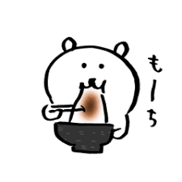
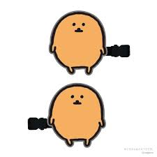
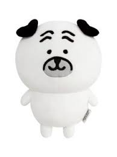
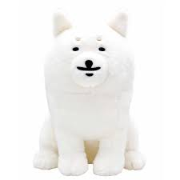

自嘲熊是一隻擅長用幽默面對生活的小熊，最大的特點就是「先笑自己再說」。 雖然常常覺得自己很廢，但其實內心很努力，只是不太敢說出口。

是一群「薯餅」，總是集體行動，性格各異的它們喜歡喋喋不休地說話和唱歌。值得一提的是，它們是可以吃的食物

拖延貓的座右銘是「等一下再做」。 每次都陪著自嘲熊一起拖到最後一刻才開始努力。

總是試圖鼓勵大家，但常常被自嘲熊吐槽。 雖然有點吵，但其實是團隊中最重要的存在。